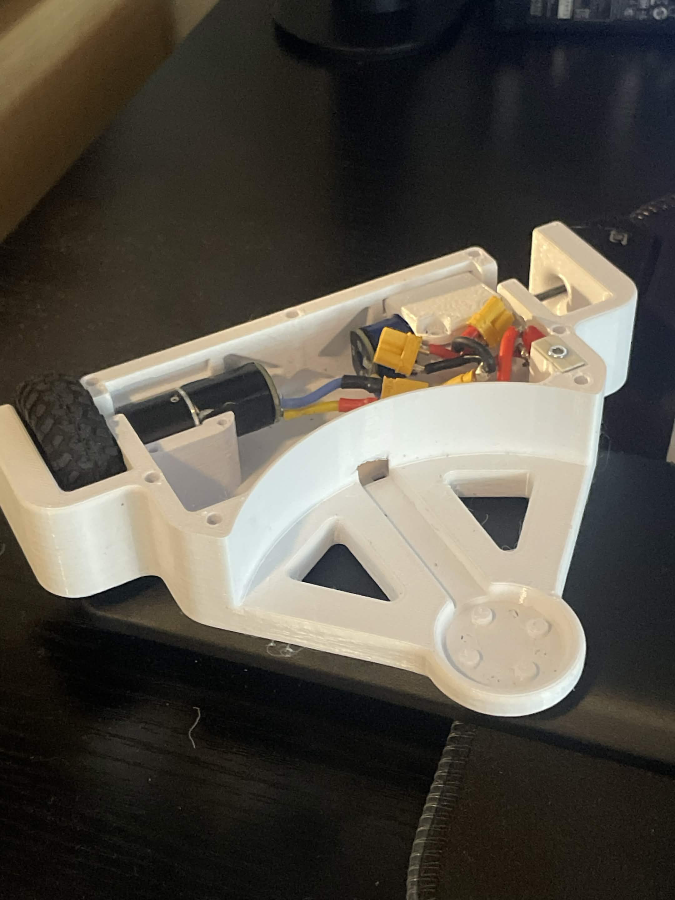
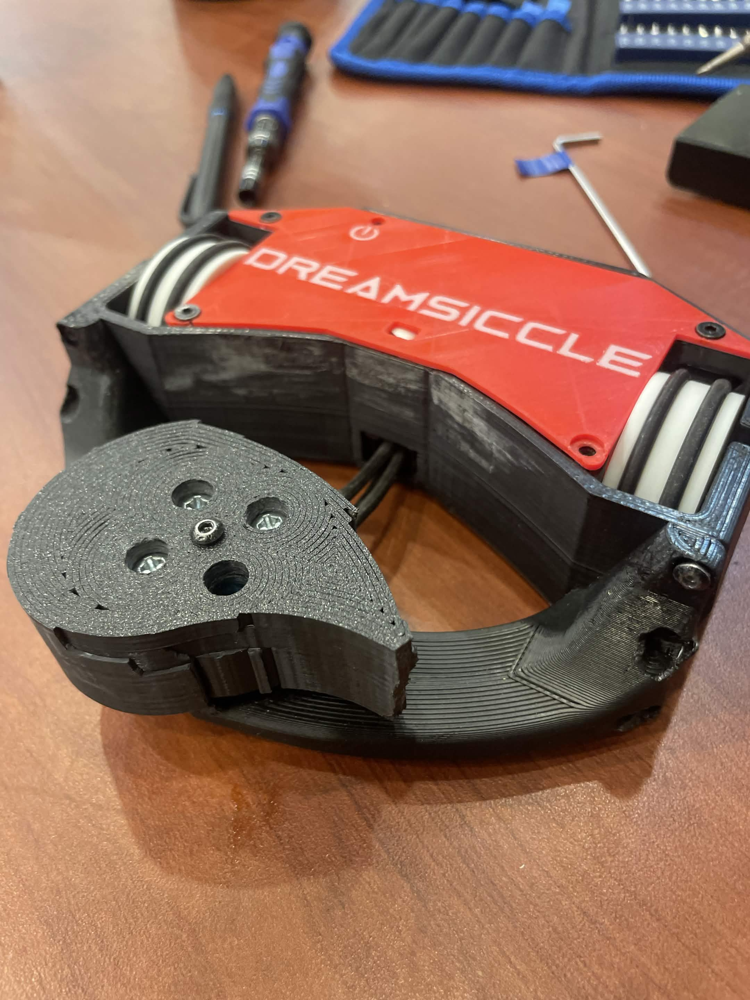
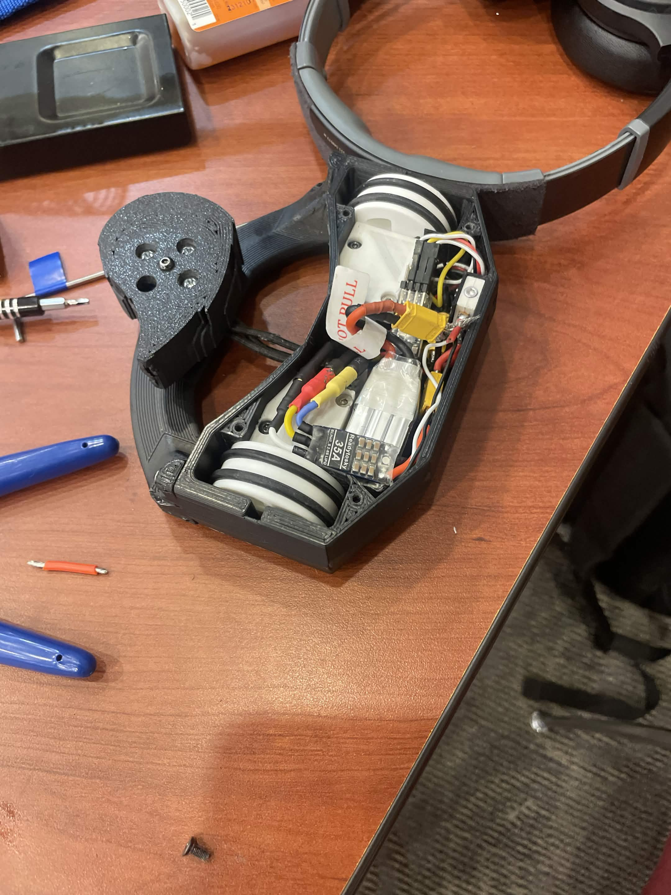
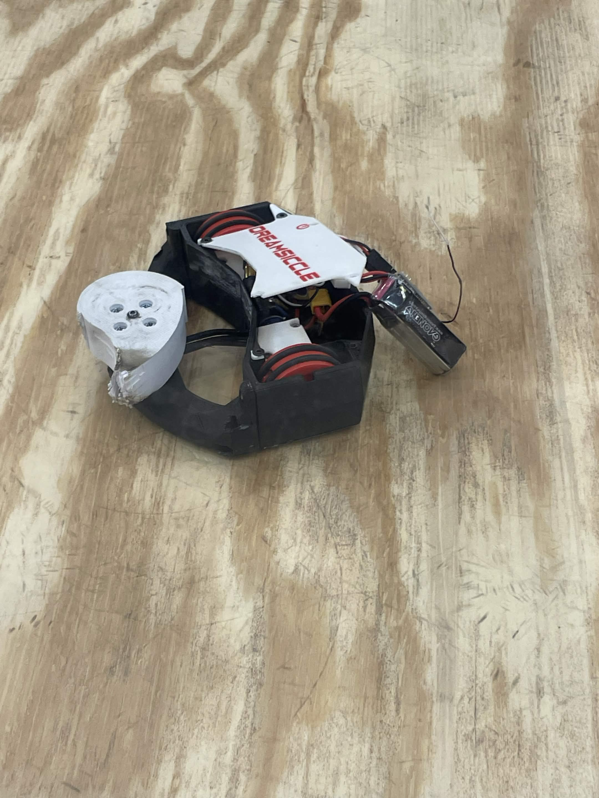
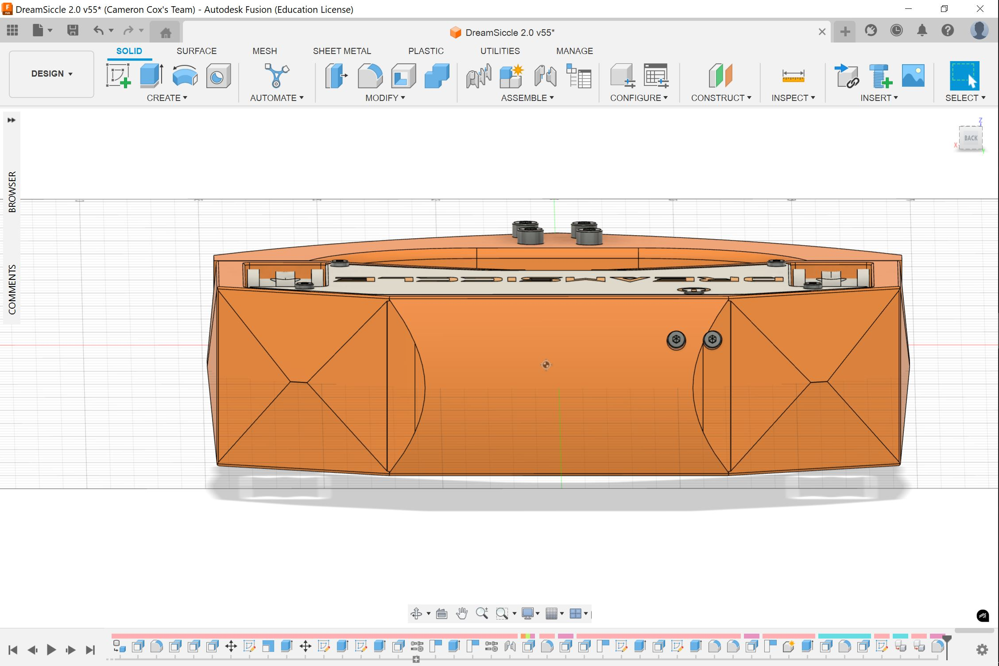
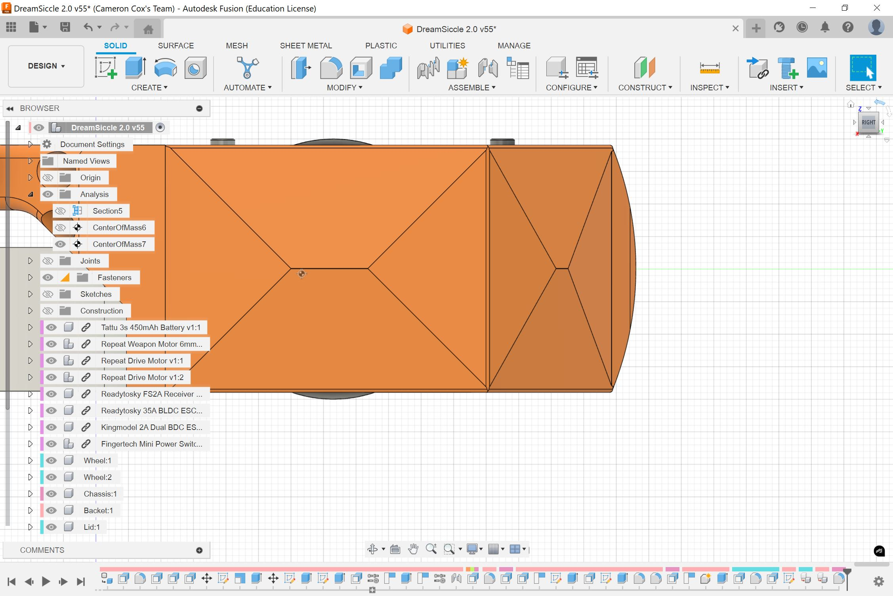
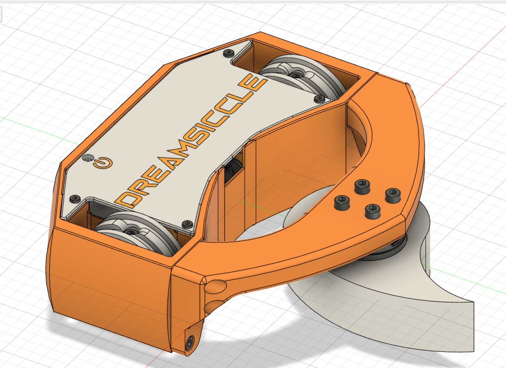
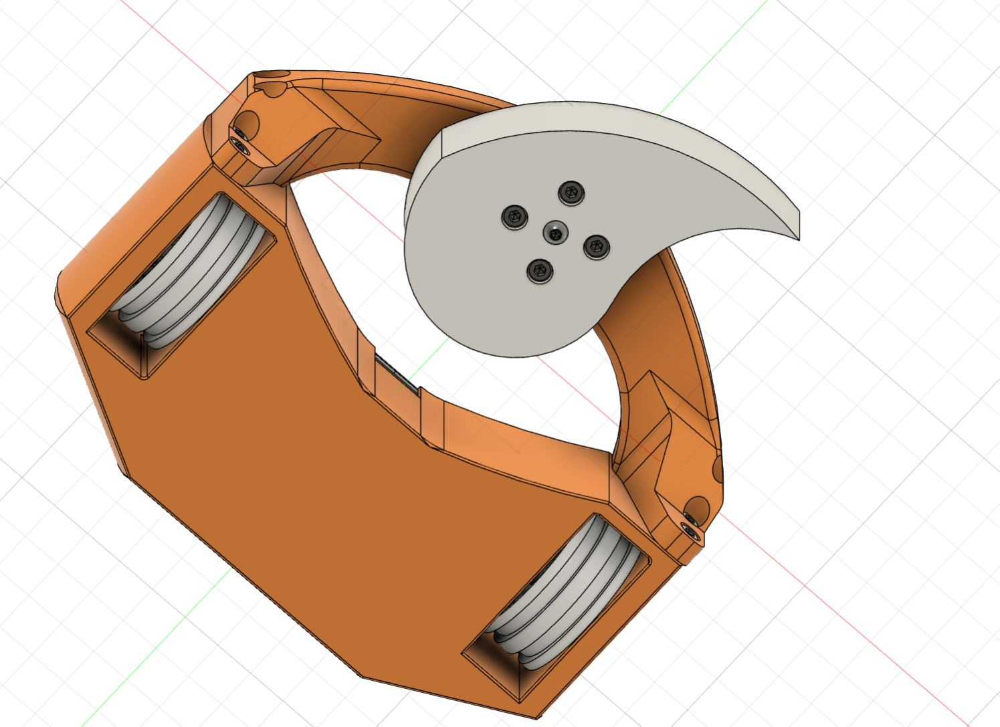

← All projects
Combat robotics · EXD
DreamSiccle.
A 1-lb horizontal spinner that competed in seven tournaments and won five fights.

Experimental Division for Combat Robotics · 1-lb class · Horizontal spinner
The robot
DreamSiccle is a 1-lb horizontal-spinner combat robot. As combat robotics team lead, I helped design, fabricate, assemble, and compete with the robot in seven tournaments, where it won five fights.
Design gallery
The CAD views show the chassis and weapon layout used during the design process.








